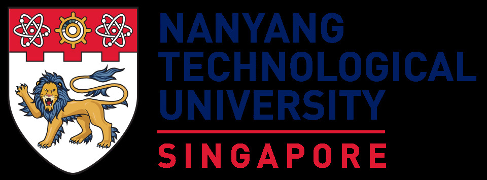
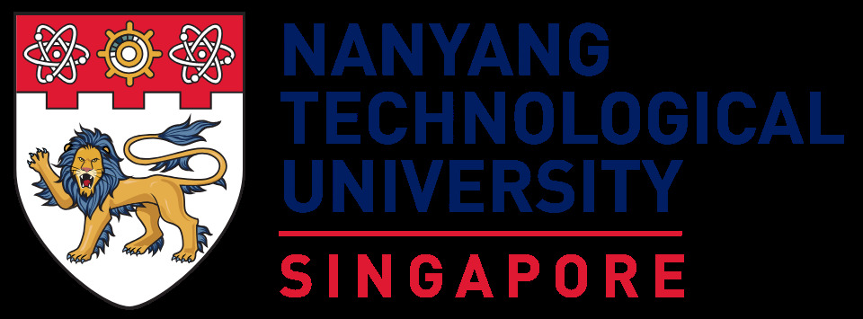

Oral & Poster Papers
Oral papers are for 12 minutes plus 3 minutes for immediate questions. Poster boards can accommodate (1m x 1m) sized posters, in either portrait or landscape. We split all the posters into Poster session 1 and Poster session 2, divided as follows, with each containing 20 poster boards.
| Paper session 1 |
[1] Ye, Hai, & Xie, Qizhe, & Ng, Hwee Tou. Multi-Source Test-Time Adaptation as Dueling Bandits for Extractive Question Answering (Slot: 08:15 - 08:30) |
| Paper session 2 |
[1] Hannan Cao, Liping Yuan, Yuchen Zhang, Hwee Tou Ng. Unsupervised Grammatical Error Correction Rivaling Supervised Methods (Slot: 10:30 - 10:45) |
| Paper session 3 |
[1] Jinggui Liang, Lizi Liao. ClusterPrompt: Cluster Semantic Enhanced Prompt Learning for New Intent Discovery (Slot: 14:00 - 14:15) |
| Poster session 1 |
[1] Yikang Pan, Liangming Pan, Wenhu Chen, Preslav Nakov, Min-Yen Kan. On the Risk of Misinformation Pollution with Large Language Models (Board: P101) |
| Poster session 2 |
[1] Xuan Long Do, Bowei Zou, Shafiq Joty, Anh Tai Tran, Liangming Pan, Nancy F. Chen, Ai Ti Aw. Modeling What-to-ask and How-to-ask for Answer unaware Conversational Question Generation (Board: P201) |
Keynote Speakers
The following speakers from both academia and industry are invited to give keynotes at SSNLP 2025. Please click the profile image to view the detailed description of the talk.
Speaker: Preslav Nakov
Abstract: I will discuss Jais and Jais-chat, two state-of-the-art Arabic-centric foundation and instruction-tuned open generative large language models (LLMs). The models are based on the GPT-3 decoder-only architecture and are pretrained on a mixture of Arabic and English texts, including source code in various programming languages. The models demonstrate better knowledge and reasoning capabilities in Arabic than previous open Arabic and multilingual models by a sizable margin, based on extensive evaluation. Moreover, they are competitive in English compared to English-centric open models of similar size, despite being trained on much less English data. I will discuss the training, the tuning, the safety alignment, and the evaluation, as well as the lessons we learned.
Bio: Dr. Preslav Nakov is Professor and Department Chair for NLP at the Mohamed bin Zayed University of Artificial Intelligence. Previously, he was Principal Scientist at the Qatar Computing Research Institute, HBKU, where he led the Tanbih mega-project, developed in collaboration with MIT, which aims to limit the impact of "fake news", propaganda and media bias by making users aware of what they are reading, thus promoting media literacy and critical thinking. He received his PhD degree in Computer Science from the University of California at Berkeley, supported by a Fulbright grant. He is Chair-Elect of the European Chapter of the Association for Computational Linguistics (EACL), Secretary of ACL SIGSLAV, and Secretary of the Truth and Trust Online board of trustees. Formerly, he was PC chair of ACL 2022, and President of ACL SIGLEX. He is also member of the editorial board of several journals including Computational Linguistics, TACL, ACM TOIS, IEEE TASL, IEEE TAC, CS&L, NLE, AI Communications, and Frontiers in AI. He authored a Morgan & Claypool book on Semantic Relations between Nominals, two books on computer algorithms, and 250+ research papers. He received a Best Paper Award at ACM WebSci'2022, a Best Long Paper Award at CIKM'2020, a Best Demo Paper Award (Honorable Mention) at ACL'2020, a Best Task Paper Award (Honorable Mention) at SemEval'2020, a Best Poster Award at SocInfo'2019, and the Young Researcher Award at RANLP’2011. He was also the first to receive the Bulgarian President's John Atanasoff award, named after the inventor of the first automatic electronic digital computer. His research was featured by over 100 news outlets, including Reuters, Forbes, Financial Times, CNN, Boston Globe, Aljazeera, DefenseOne, Business Insider, MIT Technology Review, Science Daily, Popular Science, Fast Company, The Register, WIRED, and Engadget, among others.
Speaker: Farah Benamara
Abstract: Linguistically-informed processing of unstructured textual interactions offers an important testing ground for hybrid AI and AI for social good, in particular when the attempt is to automatically under- stand beyond what is said. This talk is about the implicit nature of linguistic expressions investigating the role of context in their automatic processing: If humans need context, what about machines? I attempt to answer this question on two particular NLP applications: Hate speech detection and crisis management. I review main findings of current studies and question the use of generative IA models in applications with great social and ethical implications for society.
Bio: Dr. Farah Benamara is a Full Professor of computer science at Toulouse University Paul Sabatier. She is member of IRIT laboratory and co-head of the MELODI group. Her research concerns Natural Language Processing and focuses on the development of semantic and pragmatic models for language understanding with a particular attention on evaluative language processing, discourse processing and information extraction from texts. She published more than 100 publications in peer-reviewed international conference and journal papers. She has been designed to be area chair at ACL 2019, EACL 2021, EACL 2024 and Senior Area Chair at NAACL 2024. She is member of the editorial board of the journal of Dialogue and Discourse, IEEE Affective Computing and Traitement Automatique des Langues. She co-edited a special issue on contextual phenomena in evaluative language processing in the journal of Computational Linguistics. She is PI of several ongoing projects among which DesCartes at CNRA@CREATE Singapore on hybrid IA for NLP, Sterheotypes an EU project on the detection of racial stereotypes, QualityOnto an ANR-DFG project on fact-checking for knowledge graph validation and finally INTACT, a CNRS prematuration project on NLP-based crisis management from social media.
Speaker: Vivian Chen
Abstract: While today's conversational agents are equipped with impressive capabilities, there remains a clear distinction between the intuitive prowess of humans and the operational limits of machines. An example of this disparity is evident in the human ability to infer implicit intents from users' utterances, subsequently guiding conversations toward specific topics or recommending appropriate tasks or products. This talk aims to elevate conversational agents to a more human-like realm, enhancing user experience and practicality. By exploring innovative strategies and frameworks that leverages commonsense knowledge, we delve into the potential ways conversational agents can evolve to offer more seamless, contextually aware, and user-centric interactions. The goal is to not only close the gap between human and machine interactions but also to unlock new possibilities in how conversational agents can be utilized in our daily lives.
Bio: Dr. Yun-Nung (Vivian) Chen is currently an associate professor in the Department of Computer Science & Information Engineering at National Taiwan University. She earned her Ph.D. degree from Carnegie Mellon University, where her research interests focus on spoken dialogue systems and natural language processing. She was recognized as the Taiwan Outstanding Young Women in Science and received Google Faculty Research Awards, Amazon AWS Machine Learning Research Awards, MOST Young Scholar Fellowship, and FAOS Young Scholar Innovation Award. Her team was selected to participate in the first Alexa Prize TaskBot Challenge in 2021. Prior to joining National Taiwan University, she worked in the Deep Learning Technology Center at Microsoft Research Redmond.
Speaker: Tanya Goyal
Abstract: As large language models become more embedded in user applications, there is a push to align their outputs with human preferences. But human preferences are highly subjective, making both model alignment and evaluation extremely challenging. In this talk, I will first outline work that highlights this subjectivity, for a relatively well-defined tasks like summarization, and its effects on downstream model evaluations. Next, I will discuss how effectively trained models can capture human preferences and the impact of integrating these models into RLHF pipelines.
Bio: Dr. Tanya Goyal is an incoming (Fall 2024) assistant professor of Computer Science at Cornell University. For the 2023-2024 academic year, she is a postdoctoral researcher at the Princeton Language and Intelligence (PLI) group. Her current research focuses on designing scalable and cost-effective evaluation techniques for LLMs. Particularly, she is interested in understanding and modeling the subjectivity in human feedback, and how this affects both evaluation and training of LLMs at scale. Previously, she received her Ph.D. in computer science from the University of Texas at Austin in 2023, advised by Dr. Greg Durrett. Her thesis research focused on building tools to automatically detect attribution errors in generated text.

{kind=link}
{kind=link}
{kind=link}
Speaker: Diyi Yang
Abstract: Large language models have revolutionized the way humans interact with AI systems, transforming a wide range of fields and disciplines. In this talk, I share two distinct approaches to empowering human-AI interaction using LLMs. The first one explores how large language models transform computational social science, and how human-AI collaboration can reduce costs and improve the efficiency of social science research. The second part focuses on social skill learning via LLMs by empowering therapists with LLM-empowered feedback and deliberative practices. These two works demonstrate how human-AI interaction via LLMs can foster positive change.
Bio: Dr. Diyi Yang is an assistant professor in the Computer Science Department at Stanford University. Her research focuses on natural language processing for social impact. She has received multiple best paper awards and recognitions at leading conferences in NLP and HCI. She is a recipient of IEEE “AI 10 to Watch” (2020), Intel Rising Star Faculty Award (2021), Samsung AI Researcher of the Year (2021), Microsoft Research Faculty Fellowship (2021), NSF CAREER Award (2022), and an ONR Young Investigator Award (2023).
Speaker: João Sedoc
Abstract: The rapid advances in large language models brought about disruptive innovations in the field of conversational agents. However, recent advances also present new challenges in evaluating the quality of such systems, as well as the underlying models and methods. As conversational agents increasingly match and or even surpass human performance in dimensions like 'coherence,' we must shift our focus to the qualities of conversational agents that are fundamental to human-like conversation (e.g., empathy and emotion). In this talk, I will focus on how we can integrate psychological metrics for evaluating conversational agents along dimensions such as emotion, empathy, and user traits.
Bio: Dr. João Sedoc is an Assistant Professor of Information Systems in the Department of Technology, Operations and Statistics at New York University Stern School of Business. He is also affiliated with the Center for Datascience ML^2 Lab at NYU. His research areas are at the intersection of machine learning and natural language processing. His interests include conversational agents, hierarchical models, deep learning, and time series analysis. Before joining NYU Stern, he worked as an Assistant Research Professor in the Department of Computer Science at Johns Hopkins University. He received his PhD in Computer and Information Science from the University of Pennsylvania.
Speaker: Daniel Preoțiuc-Pietro
Abstract: Pre-trained language models are the cornerstone of most NLP applications and their performance is dependent on using large and diverse data sets. Combining knowledge of multiple data sets in a single model either in pretraining or fine-tuning can lead to better overall performance on in-domain data and can better generalize on out-of-domain data. This talk will present methods and experiments with model merging, defined as combining multiple models into a single one in parameter space without access to data or retraining. This enables models to be modular by design, where models trained on individual data sets can be dynamically used, combined or, if needed, removed under arbitrary constraints. Merging is compute and parameter efficient and allows leveraging models without access to potentially private data used in their training.
Bio: Dr. Daniel Preoțiuc-Pietro is a Senior Research Scientist and the manager of the NLP Platforms group in the Bloomberg AI Engineering group. The group's work powers products for news, financial documents, social media and search. His main research interests are on understanding and modelling the social, pragmatic and temporal aspects of text, especially from social media, with applications in domains such as Psychology, Law, Political Science and Journalism. His research was featured in popular press including the Washington Post, BBC, Scientific American or FiveThirtyEight. He is a co-organizer of the Natural Legal Language processing workshop series. Prior to joining Bloomberg, he obtained his PhD from the University of Sheffield and was a postdoctoral researcher at the University of Pennsylvania.
Speaker: Huda Khayrallah
Abstract: For most NLP models, upper and lower case letters are represented with distinct code-points. In contrast, most people naturally connect upper and lower-cased letters as highly similar and therefore expect NLP models to perform similarly on inputs that only differ in casing. However, that is often not the case, and NLP models are often unstable on non-standard casings. Subword segmentation methods (e.g., BPE (Sennrich et al., 2016) and SPM (Kudo and Richardson, 2018)) handle the sparsity introduced by a variety of linguistic features (e.g. concatenative morphology) by learning a segmentation of words into shorter sequences of characters. However, such methods do not currently handle the sparsity introduced by casing well and can lead to terrible quality on ALL CAPS data. Prior work (Berard et al., 2019; Etchegoyhen and Gete, 2020) overcame the quality drop in machine translation but did so in a way that breaks the encoding optimality of perplexity driven methods, leading to impractical sequence length/runtime. In this work, we re-encode capitalization to allow the perplexity-driven subword segmentation model to learn how to best segment this linguistic feature. Naturally occurring data accurately describes the prevalence of capitalization but underestimates the importance humans ascribe to capitalization robustness. We propose data augmentation to fill this gap. Overall, we increase translation quality on data with different casings (compared to standard SPM), with minimal impact on decoding speed on standard cased data and large speed improvements on ALL CAPS data.
Bio: Dr. Huda Khayrallah is a senior researcher at Microsoft, working on the Microsoft Translator team. She holds a PhD in computer science from The Johns Hopkins University (JHU), where she was advised by Philipp Koehn. She also holds a bachelor’s in computer science from UC Berkeley. She has worked on a variety of topics in machine translation and NLP including: low resource MT, noisy data in MT, domain adaptation, chatbots, and more.
Organizers
 



| General Chair: |
Jiaying Wu, National University of Singapore |
| Local Chairs: |
Ambuj Mehrish, Singapore University of Technology and Design Ming Shan Hee, Singapore University of Technology and Design Gerard Christopher Yeo, National University of Singapore |
| Program & Invitation Chairs: |
Yang Deng, Singapore Management University Anh Tuan Luu, Nanyang Technological University |
| Industry Relations Chair: |
Yixin Cao, Fudan University |
| Publicity Chairs: |
Wenya Wang, Nanyang Technological University Hao Fei, National University of Singapore |
| Advisory Committee: |
Min-Yen Kan, National University of Singapore Soujanya Poria, Singapore University of Technology and Design Roy Lee, Singapore University of Technology and Design |
Location
SSNLP 2024 will be held at the Mapletree Business City, Town Hall Auditorium, (10 Pasir Panjang Road, Singapore 117438.
Past SSNLP
- · SSNLP 2023. Held at NUS.
- · SSNLP 2022. Held at NUS.
- · SSNLP 2020. Held 100% virtually.
- · SSNLP 2019. Held at I2R.
- · SSNLP 2018. Inaugural event at SUTD.